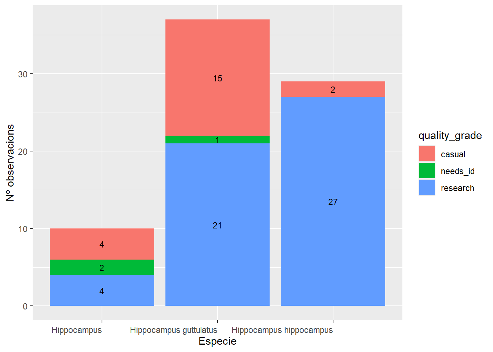
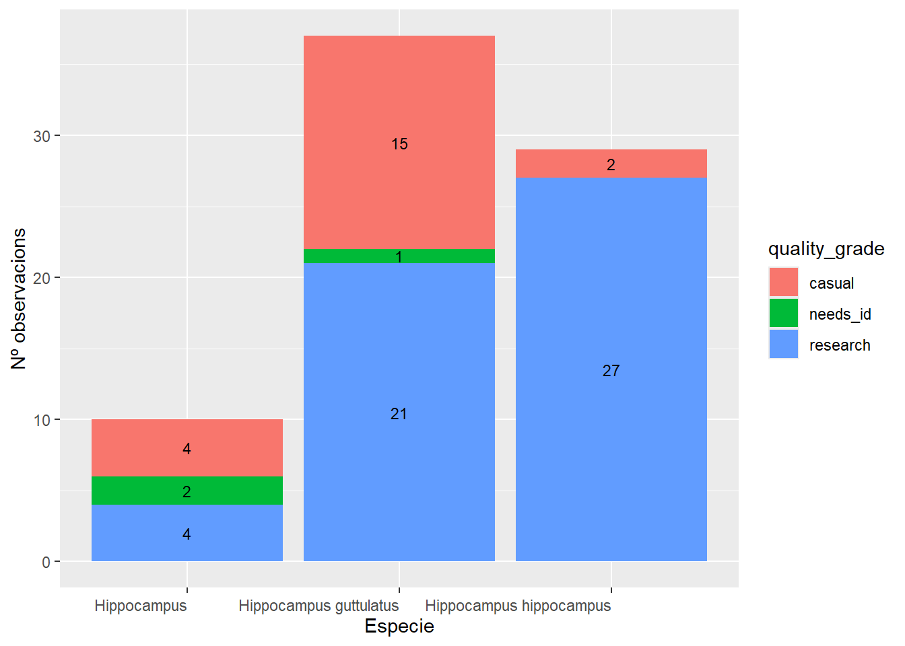

Registres Hippocampus Barcelonès
FONT DE LES DADES
MINKA és una plataforma comunitària oberta de ciencia ciutadana dedicada a la recol·lecció de dades ambientals i de biodiversitat , que conté una de les bases de dades més importants d’espècies marines mediterrànies. En total es tenen 76 observacions de Hippocampus efectuades entre 2017 i, 2025 en l´àrea de Barcelona.
D´aquestes observacions 18 apareixen en la plataforma com a captives. Es pot comprobar que en el llistat d Hippocampus captius la majoria pertanyen a Underwater Barcelona Dive Center. Aquest centre no te permís per manipular animals captius; per tan es tracta d un error al entrar les dades i es cosideraran com a exemplars en llibertat.
Cal tindre també en compte que les observacions que els falta algun item( data, localitzacio, fotografia), es cataloguen com a CASUAL. Degut a que nomes interesen les dades a efectes informatius de la quantitat d individus , també es tindran en compte.
Diagrama d observacions captives sobre el total

 
